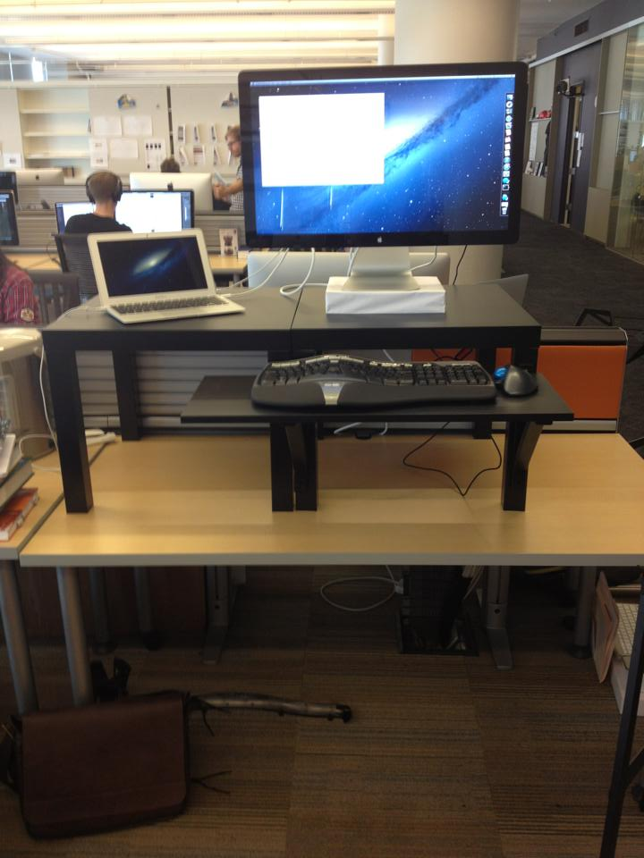

You weren’t expecting to spend 2020 working from home. You can’t afford a fancy standing desk. You don’t have a home office, or even much spare space, in your apartment. Your neck is getting a permanent crick from hunching over your laptop on the couch. While those of us who are able to work from home are privileged to have this option, we still don’t want to permanently damage our backs, necks, or arms from a bad ergonomic setup.
This is not a post for ergonomic aficionados (the setups I share could all be further optimized). This is a post for folks who don’t know where to get started, have a limited budget, and are willing to try simple, scrappy approaches. Key takeway: for 34 dollars (21 for a good mouse, and 13 for a cheap keyboard), as well as some household items, you can create an ergonomic setup like the one below. I will show many other options throughout the post, for both sitting and standing, as well as approaches you can easily assemble/disassemble (if you are using the family dinner table and need to clear it off each evening).
You can permanently damage your body with bad ergonomics
You can permanently damage your back, neck, and wrists from working without an ergonomic setup. Almost two decades ago, my partner Jeremy suffered from repetitive stress injury due to working without an ergonomic setup. At the time, his arms were paralyzed and he had to take months off from work. Even now and after years filled with good ergonomics and yoga, this still impacts his life, severely limiting how much time he can spend in cars or on planes, and creating painful flare-ups. Please take this issue seriously.
Key advice: Have a separate keyboard and mouse
The most important thing to know is that you want your screen approximately at eye height, and your elbows at approximately right angles to your torso as they type and use the mouse. This is the case whether you are sitting or standing. If you are using a laptop, this will be impossible with the built-in keyboard and trackpad (no matter how nice they are). It is essential to have a separate keyboard and mouse. If you only do one thing to address ergonomics, obtain a separate keyboard and mouse.
If you can’t afford an external monitor, no worries, you can just elevate your laptop. Over the years, I have used cardboard boxes, drinking glasses, bottles of soda, board games, and stacks of books to elevate my laptop. I will recommend some keyboards and mice that I like below, but anything is better than using the ones built into your laptop (since that forces you to keep your screen at the wrong height). For example, the picture in the intro is of a set-up I created while visiting a family member’s apartment in 2014, using books and a cardboard box to elevate my keyboard, mouse, and laptop to the appropriate heights.
Above is a picture from the deep learning study group, which meets 5 days a week, for 7 weeks, every time we run the deep learning course. I use a brown cardboard box to elevate my keyboard. We have to clear out of that conference room each evening, and it is simple for me to put my items in the box. This sort of solution could work if you don’t have a dedicated office space in your home, and need to be able to set up/take down your workstation regularly.
I rarely worked in coffee shops pre-pandemic (and never do now), but when I had to I would still try to create an ergonomic setup (and go to a coffeeshop where there was enough space!). Here, I’ve stacked my laptop on top of my rolled-up backpack. Ideally, my screen would be higher, but this is still better than having it at table level. Don’t let the perfect be the enemy of the good. Every step you take towards a more ergonomic setup is helpful.
About standing desks
If you have a regular desk (or even just a table) at home and want a standing desk, one option is to convert it using the $22 standing desk approach, which involves an Ikea side table and shelf. I had a previous job in which this was quite popular. Here is a photo of my work desk from that time.

Standing on a hard floor can be difficult for your back. I have a GelPro mat, which I love. If you can’t afford a GelPro mat, standing on a folded-up yoga mat works great too.
Note that standing desks are not a cure-all. I’ve often seen people with expensive standing-desk converters (also known as desktop risers) that still have their monitor way too low. Even if you have an external monitor and desktop riser, makes sure your monitor is at an appropriate height. It is likely you will still need to stack it on top of something. If you don’t like the aesthetics of using books or other household items, you can buy a monitor stand, such as this one.
Using a standing desk with poor posture is not very ergonomic, so be cognizant of when you start feeling fatigued. I prefer to switch between standing and sitting throughout the day, as my energy fluctuates.
Budget Recommendations
My “budget recommendation” would be to get an Anker vertical mouse for $21 and literally any keyboard. If you have to choose, I’ve found that having a good mouse is way more important than a good keyboard. It is important that you get some keyboard though, so that you can elevate your laptop screen. In the setup below, I’m using a lightweight travel keyboard that isn’t particularly ergonomic, but it works fine.
I realize that at a time when many Americans do not have enough to eat, that you may not have 34 dollars to spare (21 dollars for a mouse and 13 dollars for a cheap keyboard). However, if this is an option for you, it is well worth the cost. If you permanently damage your back, neck, or arms, no amount of money may be enough to heal them later.
Other products I like
My favorite mouse is the Logitech wireless trackball mouse. I have also used and liked the Anker vertical mouse. For keyboards, I like Goldtouch (I use an older version of this one) or the Microsoft Ergonomic Keyboard. And if you are looking for a compact, lightweight travel keyboard, I like the iClever foldup keyboard.
As mentioned above, GelPro mats are great if you are going to be standing, and a folded-up yoga mat is a cheaper alternative.
I have a Roost portable, lightweight laptop stand, which is great, although I can’t use it since I switched from a Macbook Air to a Microsoft Surface Pro. None of the links in this post are affiliate links; I’m just recommending what I’ve personally used and like.
For more about home office set-ups, Jeremy recently posted a twitter thread about his preferred computer set-up (which includes some pricier options). It’s also worth noting that his desk has a small footprint, and fits in the corner of our living room.
I couldn't be happier with my little standing desk setup. I have tried far to many products over the years, and here's what I highly recommend:
— Jeremy Howard (@jeremyphoward) July 22, 2020
1/ pic.twitter.com/lMagQPLys1
I look forward to reading your responses. Create a free GitHub account to comment below.